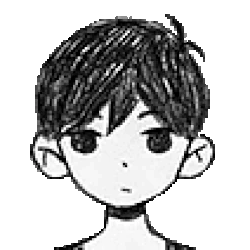
Omori
Figura central do mundo onírico, marcada pelo silêncio e pela recusa em encarar o que está oculto.
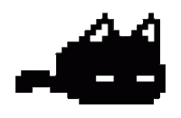
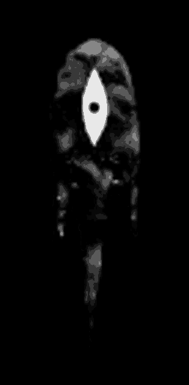
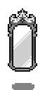
OMORI é um RPG indie de terror psicológico que articula amizade, memória, culpa e isolamento. A narrativa parte de um universo onírico aparentemente acolhedor, mas gradualmente revela tensões mais sombrias.
O contraste entre delicadeza visual e desconforto constante é um dos traços centrais do jogo. As emoções influenciam o combate, os cenários sugerem lembranças fragmentadas e a história avança de forma cada vez mais intensa.
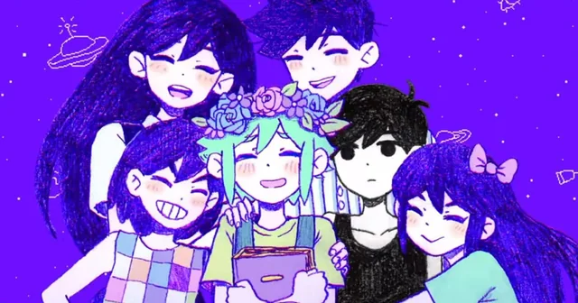

Figura central do mundo onírico, marcada pelo silêncio e pela recusa em encarar o que está oculto.
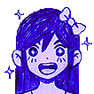
Intensa e impulsiva, carrega conflitos que revelam o peso das mudanças dentro do grupo.
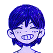
Espontâneo e otimista, funciona como o impulso que mantém o grupo em movimento.
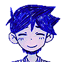
Equilibrado e cuidadoso, assume naturalmente o papel de apoio entre os amigos.
. . .
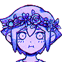
Sensível e reservado, guarda memórias decisivas para o desenrolar da história.
O combate em OMORI se destaca pelo uso das emoções como parte central da estratégia, influenciando atributos e relações de vantagem entre os personagens.
Embora seja estruturado em turnos, o sistema de batalha ganha identidade própria ao transformar estados emocionais em mecânicas ativas. Isso faz com que cada confronto dependa não apenas de força, mas também de leitura tática e controle de estado.
As emoções alteram dano, defesa, velocidade e precisão, mudando a dinâmica do combate.
Cada estado possui vantagens e desvantagens, exigindo decisões mais cuidadosas a cada turno.
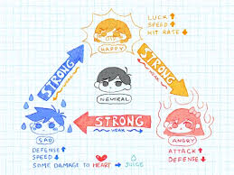
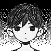
Sem modificadores emocionais.
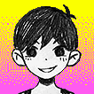
Aumenta sorte e velocidade.
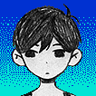
Eleva defesa e resistência.
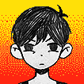
Amplia o poder de ataque.
Três núcleos centrais do universo de OMORI.